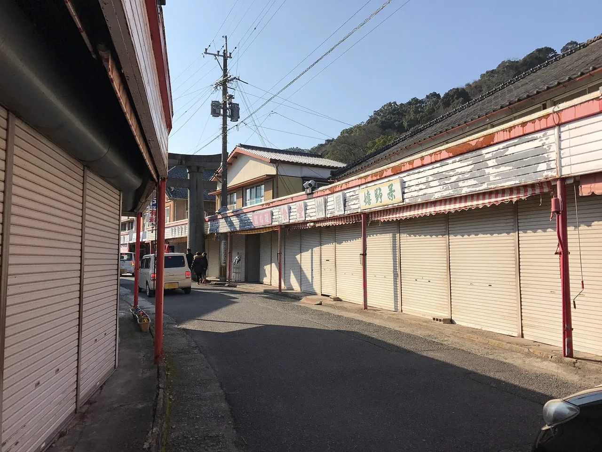

Saga Travel Guide for Japanese Learners
Japan's porcelain heartland and a vivid autumn balloon festival.

Small Saga is the birthplace of Japanese porcelain — Arita and Imari wares are world-famous — and hosts a spectacular hot-air balloon fiesta each autumn.
History & background
Saga (佐賀) is the birthplace of Japanese porcelain: in the early 1600s, potters near Arita (有田) found kaolin clay and began making the wares exported worldwide as 'Imari' (伊万里).
What to see
- Arita and Imari porcelain towns
- Yoshinogari prehistoric site
- Saga International Balloon Fiesta
- Yutoku Inari Shrine
Hidden gems
- Okawachiyama is an old porcelain village nestled in mountains where artisans still hand-paint ceramics in centuries-old kilns open to visitors.
- Takeo Onsen offers a historic bathhouse district with striking red-brick architecture and natural hot springs frequented by locals, not tourists.
- Nazo no Tako Hakubutsukan (Mystery Octopus Museum) in Yobuko celebrates the local squid fishing heritage through quirky displays and fresh seafood.
Some links above are affiliate links. We may earn a commission at no extra cost to you. We only list services we'd use ourselves.
What to eat
Saga beef and fresh squid in Yobuko.
Getting there & when to go
Getting there: Saga is ~40 min from Fukuoka (Hakata) by limited express.
Best time: Late October–early November for the balloon fiesta.
When to go — season by season
Late October–early November brings the spectacular Balloon Fiesta. Spring and autumn suit the porcelain towns and the Yutoku Inari (祐徳稲荷) shrine.
Local culture
Saga's porcelain tradition blends Chinese techniques brought in the 1600s with Japanese aesthetic refinement. Visiting a working kiln reveals how potters still mix clay by foot and fire pieces in wood-burning kilns—a tactile, generations-old craft you can observe firsthand.
In Yobuko and coastal towns, early-morning squid boats return with the night's catch. The fishing community maintains strict seasonal rhythms; summer brings peak squid season, and locals eat it grilled, raw, or dried—it's woven into everyday meals and festival celebrations year-round.
A suggested visit
Browse the kilns and porcelain shops of Arita and Imari, see the reconstructed Yoshinogari (吉野ヶ里) prehistoric village, and time an autumn visit with the hot-air balloons over the Saga plains.
Seasonal tip: November mornings are coldest and clearest for balloon launches; arrive by 5 a.m. if attending the Balloon Fiesta, as venues fill by sunrise and weather can ground flights after mid-morning.
Local etiquette: In porcelain workshops and kilns, ask permission before photographing artisans at work; many family-run studios consider their techniques proprietary, and a simple 「写真を撮ってもいいですか？」 (shashin wo totte mo ii desu ka?) shows respect.
Combine Saga with Fukuoka — they're close, and Saga is far less crowded.
Some links above are affiliate links. We may earn a commission at no extra cost to you. We only list services we'd use ourselves.
Common questions
Q. How do I get to Saga from Fukuoka?
A. A limited express train takes about 40 minutes from Hakata Station. It's affordable and direct, so no rental car needed unless you plan visiting multiple porcelain towns like Arita and Imari.
Q. When should I visit Saga?
A. Late October through early November is ideal for the Saga International Balloon Fiesta. Book accommodation early—this festival draws crowds, and hotels fill quickly during peak balloon season.
Q. What should I eat in Saga?
A. Try Saga beef and fresh squid in Yobuko. Local squid is especially prized here, often prepared sashimi-style, and reflects Saga's coastal character alongside its porcelain fame.